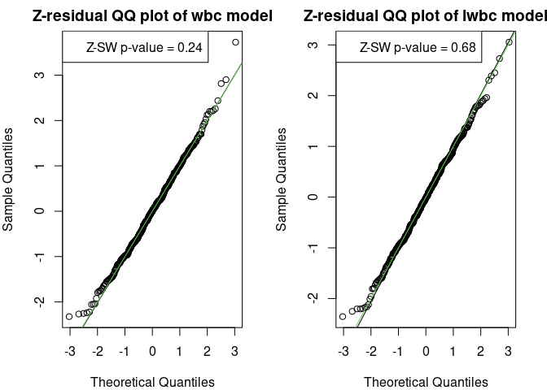
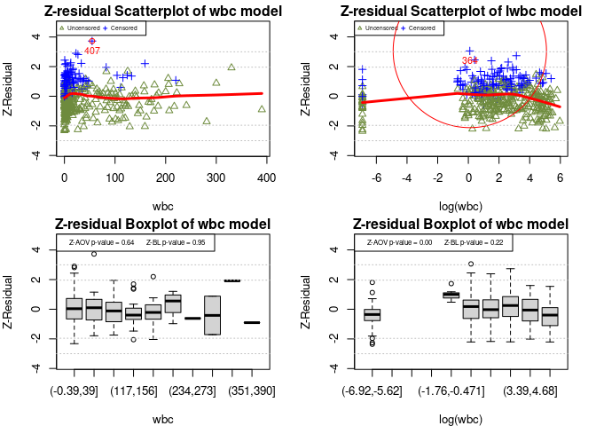
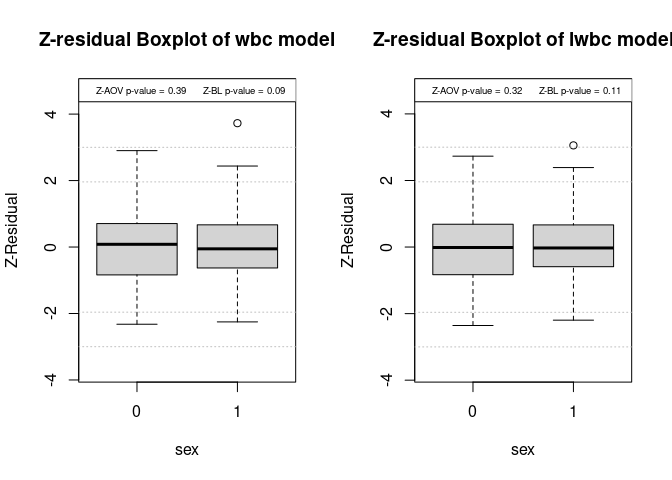
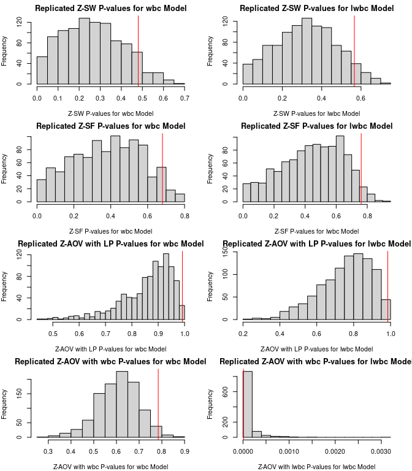
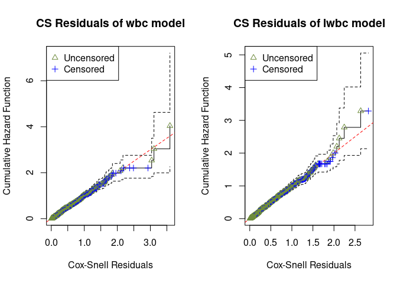
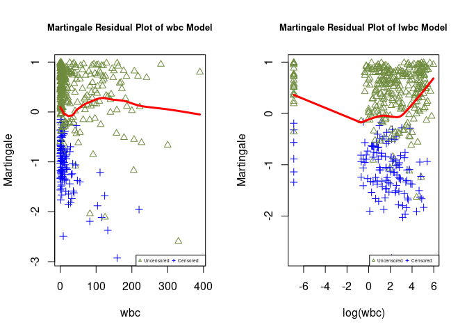
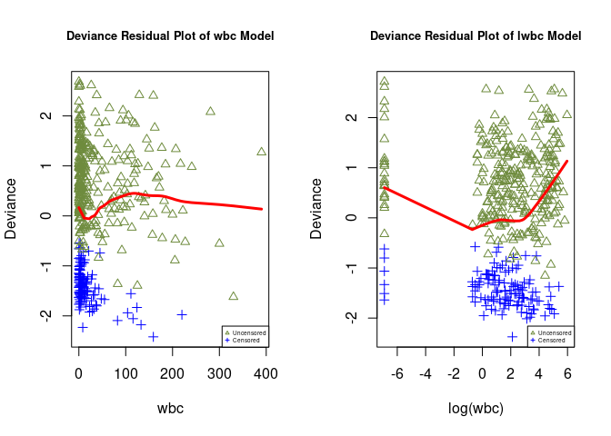

The Z-residual is residual diagnosis tool for diagnosing survival models and generalized linear models.
Installation
You can install the development version of this package from GitHub with:
# install.packages("devtools")
devtools::install_github("tiw150/Zresidual")References
Li, L., Wu, T., Feng, C., 2021. Model Diagnostics for Censored Regression via Randomized Survival Probabilities. Statistics in Medicine, 2020+. https://doi.org/10.1002/sim.8852; https://onlinelibrary.wiley.com/share/author/F8DKBTX7IT7UT2WTSZP3?target=10.1002/sim.8852
Wu, T., Li, L., & Feng, C. (2023). Z-residual diagnostics for detecting misspecification of the functional form of covariates for shared frailty models. arXiv, page 2302.09106, 2023. Under review by Journal of Applied Statistics. https://arxiv.org/abs/2302.09106
Example
This example provides a fundamental illustration of using the Z-residuals for diagnosing both the overall goodness of fit (GOF) and the functional form of covariates in a real application for modelling the survival times of acute myeloid leukemia patients.
The dataset employed in our analysis contains 411 patients who were recorded at the M. D. Anderson Cancer Center between 1980 and 1996. These patients were under the age of 60 and hailed from 24 administrative districts. The data collected information on the survival time for acute myeloid leukemia and prognostic factors, including age, sex, white blood cell count (wbc) at diagnosis, and the townsend score (tpi) for which higher values indicate less affluent areas. The censoring rate is 29.2%. The response variable of interest is the survival time in days, which is the time from entry to the study or death. The preliminary study showed that the wbc is highly right-skewed. Logarithm transformation is often used to reduce the impact of extremely large values of the covariate on the response variable, such as the wbc variable in this application. However, a logarithm transformation may mask the impact of extremely large values of the covariate on the outcome variable.
library(Zresidual)
#>
#> Attaching package: 'Zresidual'
#> The following object is masked from 'package:stats':
#>
#> residuals
library(survival)
library(EnvStats)
#>
#> Attaching package: 'EnvStats'
#> The following objects are masked from 'package:stats':
#>
#> predict, predict.lm
## basic example code
data("LeukSurv")
head(LeukSurv)
#> time cens xcoord ycoord age sex wbc tpi district
#> 1 1 1 0.2050717 0.4972437 61 0 13.3 -1.96 9
#> 2 1 1 0.2855568 0.8489526 76 0 450.0 -3.39 7
#> 3 1 1 0.1764057 0.7364939 74 0 154.0 -4.95 7
#> 4 1 1 0.2447630 0.2105843 79 1 500.0 -1.40 24
#> 5 1 1 0.3274531 0.9073870 83 1 160.0 -2.59 7
#> 6 1 1 0.6383682 0.3627343 81 1 30.4 0.03 11
LeukSurv<-LeukSurv[LeukSurv$age<60,]
#is.factor(LeukSurv$district)
#is.factor(LeukSurv$sex)
LeukSurv$district<-as.factor(LeukSurv$district)
LeukSurv$sex<-as.factor(LeukSurv$sex)
LeukSurv$logwbc<- log(LeukSurv$wbc+0.001)We fitted two shared frailty models, one with covariates wbc, age, sex and tpi, which is labelled as the wbc model, and the other with log(wbc) replacing wbc, which is labelled as the lwbc model.
fit_LeukSurv_wbc <- tryCatch(
coxph(Surv(time, cens) ~ age +sex+ wbc +tpi +
frailty(district, distribution="gamma"), data= LeukSurv),
error = function(e) NA,
warning = function(w) NA
)
fit_LeukSurv_logwbc <- tryCatch(
coxph(Surv(time, cens) ~ age +sex + logwbc + tpi +
frailty(district, distribution="gamma"), data= LeukSurv),
error = function(e) NA,
warning = function(w) NA
)
if (any(is.na(fit_LeukSurv_wbc)) || any(is.na(fit_LeukSurv_logwbc))) stop("An error or warning has occurred during the model fitting process.")Once the model is fitted, we can calculate Z-residual, censored Z-residual and other residuals for two models.
Zresid.LeukSurv.wbc<-Zresidual(fit.object = fit_LeukSurv_wbc,data= LeukSurv)
#> Loading required namespace: pacman
Zresid.LeukSurv.logwbc<-Zresidual(fit.object = fit_LeukSurv_logwbc,data= LeukSurv)Diagnosis of the overall (GOF) and the Functional Form of Covariates using Z-residuals
A QQ plot based on Z-residuals can be used to graphically assess the model’s overall GOF, and Shapiro-Wilk (SW) or Shapiro-Francia (SF) normality tests applied to Z-residuals can be used to numerically test the overall GOF of the model.
We can see that the QQ plots of Z-residuals of these two models align well with the 45 diagonal line. The Z-SW tests also give large p-values for two models, where Z-SW is the test method that the normality of Z-residuals is tested with the SW test.
par(mfrow = c(1,2),mar=c(4,4,2,2))
qqnorm(Zresid.LeukSurv.wbc,main.title = "Z-residual QQ plot of wbc model")
qqnorm(Zresid.LeukSurv.logwbc,main.title = "Z-residual QQ plot of lwbc model")
The Z-residuals can be divided into groups by cutting the linear predictors or covariates into equally-spaced intervals. Then we can check whether the Z-residuals of the groups are homogeneously distributed. A quantitative method to assess the homogeneity of such grouped Z-residuals is to test the equality of group means or variances of the Z-residuals. We employ the F-test in ANOVA to assess the equality of means and Bartlett’s test to examine the equality of variances.
The scatterplots of Z-residuals against the linear predictor don’t exhibit visible trends; their LOWESS lines are very close to the horizontal line at 0; the boxplots of Z-residuals grouped by cutting linear predictors into equal-spaced intervals appear to have equal means and variance across groups. The Z-AOV and Z-BL for linear predictors tests also gives large p-values for the wbc and lwbc models, where Z-AOV and Z-BL are the methods of applying ANOVA and Bartlett to test the equality of the means and variances of Z-residuals against the groups formed with the linear predictor.
par(mfrow = c(2,2),mar=c(4,4,1.5,2))
plot(Zresid.LeukSurv.wbc,
X=fit_LeukSurv_wbc$linear.predictors,
xlab="Linear Predictor",
main.title = "Z-residual Scatterplot of wbc model")
#> Outlier Indices: 407
plot(Zresid.LeukSurv.logwbc,
X=fit_LeukSurv_logwbc$linear.predictors,
xlab="Linear Predictor",
main.title = "Z-residual Scatterplot of lwbc model")
#> Outlier Indices: 364
boxplot(Zresid.LeukSurv.wbc,fitted.values=fit_LeukSurv_wbc$linear.predictors,
main.title = "Z-residual Boxplot of wbc model",xlab="Linear Predictor")
boxplot(Zresid.LeukSurv.logwbc,fitted.values=fit_LeukSurv_logwbc$linear.predictors,
main.title = "Z-residual Boxplot of lwbc model",xlab="Linear Predictor")
The above diagnostics results reveal no serious misspecification in these two models. However, the inspection of the Z-residuals against the covariate wbc/log(wbc) reveals that the functional form of the lwbc model is likely misspecified. The scatterplots and comparative boxplots of the Z-residuals against wbc/log(wbc) are shown below. The LOWESS curve of the wbc model appears to align well with the horizontal line at 0 and the grouped Z-residuals of the wbc model appear to have equal means and variances across groups. However, the diagnosis results for the lwbc model are very different. It appears that there is a non-linear trend in the LOWESS curve of the lwbc model and the grouped Z-residuals appear to have different means across groups. The Z-AOV and Z-BL for covariate wbc and log(wbc) also gives p-values for the wbc and lwbc models as shown in the boxplots. The very small p-value of the Z-AOV for covariate log(wbc) test for the lwbc models strongly suggests that the log transformation of wbc is likely inappropriate for modelling the survival time.
par(mfrow = c(2,2),mar=c(4,4,1.5,2))
plot(Zresid.LeukSurv.wbc,
X=LeukSurv$wbc,
xlab="wbc",main.title = "Z-residual Scatterplot of wbc model")
#> Outlier Indices: 407
plot(Zresid.LeukSurv.logwbc,
X=LeukSurv$logwbc,
xlab="log(wbc)",main.title = "Z-residual Scatterplot of lwbc model")
#> Outlier Indices: 364
boxplot(Zresid.LeukSurv.wbc,fitted.values=LeukSurv$wbc,main.title = "Z-residual Boxplot of wbc model",xlab="wbc")
boxplot(Zresid.LeukSurv.logwbc,fitted.values=LeukSurv$logwbc,main.title = "Z-residual Boxplot of wbc model", xlab="log(wbc)")
The boxplots of the Z-residuals against categorical covariate sex shows the grouped Z-residuals appear to have equal means and variances across groups. The p-values of Z-AOV and Z-BL are greater than 0.05.
par(mfrow = c(1,2))
boxplot(Zresid.LeukSurv.wbc,fitted.values=LeukSurv$sex,xlab="sex",main.title = "Z-residual Boxplot of wbc model")
boxplot(Zresid.LeukSurv.logwbc,fitted.values=LeukSurv$sex,xlab="sex",main.title = "Z-residual Boxplot of lwbc model")
The Shapiro-Wilk (SW) or Shapiro-Francia (SF) normality tests applied to Z-residuals can be used to numerically test the overall GOF of the model. Moreover, the Shapiro-Franciard (SF) test can be employed to assess the normality of censored data. The diagnosis of the GOF of survival probabilities can be converted into a diagnosis of the normality of the censored Z-residuals. Thus, by utilizing the gofTestCensored function from the R package EnvStats, one can examine the normality of censored Z-residuals.
sw.test.zresid(Zresid.LeukSurv.wbc)
#> [1] 0.2383382
sw.test.zresid(Zresid.LeukSurv.logwbc)
#> [1] 0.6750511
sf.test.zresid(Zresid.LeukSurv.wbc)
#> [1] 0.2161675
sf.test.zresid(Zresid.LeukSurv.logwbc)
#> [1] 0.7628117The Z-residuals can be divided into groups by cutting the covariates or linear predictors into equally-spaced intervals. To quantitatively evaluate the homogeneity of grouped Z-residuals, we propose testing the equality of group means and group variances. For this purpose, we employ the F-test in ANOVA to assess the equality of means and Bartlett’s test to examine the equality of variances.
anov.test.zresid(Zresid.LeukSurv.wbc,fitted.values=fit_LeukSurv_wbc$linear.predictors, k.anova=10)
#> [1] 0.8623168
anov.test.zresid(Zresid.LeukSurv.logwbc,fitted.values=fit_LeukSurv_logwbc$linear.predictors, k.anova=10)
#> [1] 0.7244503
bartlett.test(Zresid.LeukSurv.wbc,fitted.values=fit_LeukSurv_wbc$linear.predictors, k.bl=10)
#> [1] 0.2654078
bartlett.test(Zresid.LeukSurv.logwbc,fitted.values=fit_LeukSurv_logwbc$linear.predictors, k.bl=10)
#> [1] 0.239635
anov.test.zresid(Zresid.LeukSurv.wbc,fitted.values=LeukSurv$wbc, k.anova=10)
#> [1] 0.635346
anov.test.zresid(Zresid.LeukSurv.logwbc,fitted.values=LeukSurv$logwbc, k.anova=10)
#> [1] 2.908493e-06
bartlett.test(Zresid.LeukSurv.wbc,fitted.values=LeukSurv$wbc, k.bl=10)
#> [1] 0.951957
bartlett.test(Zresid.LeukSurv.logwbc,fitted.values=LeukSurv$logwbc, k.bl=10)
#> [1] 0.2229889The Z-residual test p-values quoted above contain randomness because of the randomization in generating Z-residuals. To ensure the robustness of the model diagnostics results, we generated 1000 replicated test p-values with 1000 sets of regenerated Z-residuals for each test method. We also provide the values for diagnosing the two models with Z-residual-based tests.
n_sims<-1000
cur_time = proc.time()
sw.LeukSurv.wbc<- rep(0,n_sims)
sf.LeukSurv.wbc<- rep(0,n_sims)
anov.LeukSurv.lp.wbc<- rep(0,n_sims)
anov.LeukSurv.wbc<- rep(0,n_sims)
sw.LeukSurv.lwbc<- rep(0,n_sims)
sf.LeukSurv.lwbc<- rep(0,n_sims)
anov.LeukSurv.lp.lwbc<- rep(0,n_sims)
anov.LeukSurv.lwbc<- rep(0,n_sims)
for(j in 1:n_sims ){
Zresid.LeukSurv.wbc<-Zresidual(fit.object = fit_LeukSurv_wbc,data= LeukSurv)
sw.LeukSurv.wbc[j]<-sw.test.zresid(Zresid.LeukSurv.wbc)
sf.LeukSurv.wbc[j]<-sf.test.zresid(Zresid.LeukSurv.wbc)
anov.LeukSurv.lp.wbc[j]<-anov.test.zresid(Zresid.LeukSurv.wbc,
fitted.values=fit_LeukSurv_wbc$linear.predictors,
k.anova=10)
anov.LeukSurv.wbc[j]<-anov.test.zresid(Zresid.LeukSurv.wbc,
fitted.values=LeukSurv$wbc,
k.anova=10)
Zresid.LeukSurv.lwbc<-Zresidual(fit.object = fit_LeukSurv_logwbc,data= LeukSurv)
sw.LeukSurv.lwbc[j]<-sw.test.zresid(Zresid.LeukSurv.lwbc)
sf.LeukSurv.lwbc[j]<-sf.test.zresid(Zresid.LeukSurv.lwbc)
anov.LeukSurv.lp.lwbc[j]<-anov.test.zresid(Zresid.LeukSurv.lwbc,
fitted.values=fit_LeukSurv_logwbc$linear.predictors,
k.anova=10)
anov.LeukSurv.lwbc[j]<-anov.test.zresid(Zresid.LeukSurv.lwbc,
fitted.values=LeukSurv$logwbc,
k.anova=10)
}
pmin.sw.LeukSurv.wbc<-bounds_pvalues(pv=sw.LeukSurv.wbc);pmin.sw.LeukSurv.wbc
#> [1] 0.4802859
pmin.sf.LeukSurv.wbc<-bounds_pvalues(pv=sf.LeukSurv.wbc);pmin.sf.LeukSurv.wbc
#> [1] 0.6803299
pmin.aov.lp.LeukSurv.wbc<-bounds_pvalues(pv=anov.LeukSurv.lp.wbc);pmin.aov.lp.LeukSurv.wbc
#> [1] 0.9918903
pmin.aov.wbc.LeukSurv<-bounds_pvalues(pv=anov.LeukSurv.wbc);pmin.aov.wbc.LeukSurv
#> [1] 0.7841056
pmin.sw.LeukSurv.lwbc<-bounds_pvalues(pv=sw.LeukSurv.lwbc);pmin.sw.LeukSurv.lwbc
#> [1] 0.5661198
pmin.sf.LeukSurv.lwbc<-bounds_pvalues(pv=sf.LeukSurv.lwbc);pmin.sf.LeukSurv.lwbc
#> [1] 0.7611368
pmin.aov.lp.LeukSurv.lwbc<-bounds_pvalues(pv=anov.LeukSurv.lp.lwbc);pmin.aov.lp.LeukSurv.lwbc
#> [1] 0.9849655
pmin.aov.lwbc.LeukSurv<-bounds_pvalues(pv=anov.LeukSurv.lwbc);pmin.aov.lwbc.LeukSurv
#> [1] 1.222356e-05The histograms of 1000 replicated Z-residual test p-values for the wbc and lwbc models. The red vertical lines in these histograms show the upper bound summaries of these replicated p-values, . These histograms show that the Z-SW, Z-SF, and Z-AOV with LP tests for both models give a large proportion of p-values greater than 0.05, and the large p-values result in large values. In contrast, the replicated Z-AOV with log(wbc) p-values for the lwbc model are almost all smaller than 0.001. The consistently small Z-AOV with log(wbc) p-values further confirm that the log transformation of wbc is inappropriate for modelling the survival time.
par(mfrow = c(4,2),mar=c(4,4,2,2))
hist(sw.LeukSurv.wbc,main="Replicated Z-SW P-values for wbc Model",breaks=20,
xlab="Z-SW P-values for wbc Model")
abline(v=pmin.sw.LeukSurv.wbc,col="red")
hist(sw.LeukSurv.lwbc,main="Replicated Z-SW P-values for lwbc Model",breaks=20,
xlab="Z-SW P-values for lwbc Model")
abline(v=pmin.sw.LeukSurv.lwbc,col="red")
hist(sf.LeukSurv.wbc,main="Replicated Z-SF P-values for wbc Model",breaks=20,
xlab="Z-SF P-values for wbc Model")
abline(v=pmin.sf.LeukSurv.wbc,col="red")
hist(sf.LeukSurv.lwbc,main="Replicated Z-SF P-values for lwbc Model",breaks=20,
xlab="Z-SF P-values for lwbc Model")
abline(v=pmin.sf.LeukSurv.lwbc,col="red")
hist(anov.LeukSurv.lp.wbc,main="Replicated Z-AOV with LP P-values for wbc Model",breaks=20,
xlab="Z-AOV with LP P-values for wbc Model")
abline(v=pmin.aov.lp.LeukSurv.wbc,col="red")
hist(anov.LeukSurv.lp.lwbc,main="Replicated Z-AOV with LP P-values for lwbc Model",breaks=20,
xlab="Z-AOV with LP P-values for lwbc Model")
abline(v=pmin.aov.lp.LeukSurv.lwbc,col="red")
hist(anov.LeukSurv.wbc,main="Replicated Z-AOV with wbc P-values for wbc Model",breaks=20,
xlab="Z-AOV with wbc P-values for wbc Model")
abline(v=pmin.aov.wbc.LeukSurv,col="red")
hist(anov.LeukSurv.lwbc,main="Replicated Z-AOV with wbc P-values for lwbc Model",breaks=20,
xlab="Z-AOV with lwbc P-values for lwbc Model")
abline(v=pmin.aov.lwbc.LeukSurv,col="red")
censored.Zresid.LeukSurv.wbc<-residuals(fit.object = fit_LeukSurv_wbc,data= LeukSurv,residual.type="censored Z-residual")
censored.Zresid.LeukSurv.logwbc<-residuals(fit.object = fit_LeukSurv_logwbc,data= LeukSurv,residual.type="censored Z-residual")
gof.censore.zresid(censored.Zresidual=censored.Zresid.LeukSurv.wbc)
#> [1] 0.5702324
gof.censore.zresid(censored.Zresidual=censored.Zresid.LeukSurv.logwbc)
#> [1] 0.07535993The overall GOF tests and graphical checking with CS residuals show that both the wbc and lwbc models provide adequate fits to the dataset. The estimated CHFs of the CS residuals of both of the wbc and lwbc models align closely along the diagonal line.
##unmodified CS residuals
ucs.LeukSurv.wbc<-residuals(fit.object = fit_LeukSurv_wbc,data= LeukSurv,residual.type = "Cox-Snell" )
ucs.LeukSurv.logwbc<-residuals(fit.object = fit_LeukSurv_logwbc,data= LeukSurv,residual.type = "Cox-Snell" )
par(mfrow = c(1,2))
km.ln.LeukSurv.wbc <- survfit(Surv(ucs.LeukSurv.wbc, LeukSurv$cens)~1,type='fleming')
id.ln.LeukSurv.wbc<-order(ucs.LeukSurv.wbc)
plot(km.ln.LeukSurv.wbc, fun="cumhaz", xlab=("Cox-Snell Residuals"),
ylab=("Cumulative Hazard Function"),
main="CS Residuals of wbc model")
abline(0, 1, col="red", lty=2)
points(km.ln.LeukSurv.wbc$time, -log(km.ln.LeukSurv.wbc$surv),
col=c("blue","darkolivegreen4")[LeukSurv$cens[id.ln.LeukSurv.wbc]+1],
pch=c(3,2)[LeukSurv$cens[id.ln.LeukSurv.wbc]+1] )
legend(x = "topleft",
legend = c("Uncensored", "Censored"), col=c("darkolivegreen4","blue"),
pch=c(2,3),cex=1,xpd = TRUE,bty="L")
km.ln.LeukSurv.lwbc <- survfit(Surv(ucs.LeukSurv.logwbc, LeukSurv$cens)~1,type='fleming')
id.ln.LeukSurv.lwbc<-order(ucs.LeukSurv.logwbc)
plot(km.ln.LeukSurv.lwbc, fun="cumhaz", xlab=("Cox-Snell Residuals"),
ylab=("Cumulative Hazard Function"),
main="CS Residuals of lwbc model")
abline(0, 1, col="red", lty=2)
points(km.ln.LeukSurv.lwbc$time, -log(km.ln.LeukSurv.lwbc$surv),
col=c("blue","darkolivegreen4")[LeukSurv$cens[id.ln.LeukSurv.lwbc]+1],
pch=c(3,2)[LeukSurv$cens[id.ln.LeukSurv.lwbc]+1] )
legend(x = "topleft",
legend = c("Uncensored", "Censored"), col=c("darkolivegreen4","blue"),
pch=c(2,3),cex=1,xpd = TRUE,bty="L")
The martingale residuals are mostly within the interval (-3, 1) for those two models. In the scatterplots of martingale residuals under the wbc model, the LOWESS curves have a slight upward slope on the left, while under the lwbc model, they display a pronounced downward curve. Both of these lines demonstrate noticeable non-horizontal trends.
#Martingale residuals
martg.LeukSurv.wbc<-residuals(fit.object = fit_LeukSurv_wbc,data= LeukSurv,residual.type = "martingale" )
martg.LeukSurv.logwbc<-residuals(fit.object = fit_LeukSurv_logwbc,data= LeukSurv,residual.type = "martingale" )
par(mfrow = c(1,2))
plot(LeukSurv$wbc,martg.LeukSurv.wbc,ylab="Martingale",
xlab="wbc",
main= title(main="Martingale Residual Plot of wbc Model",cex.main=0.8),
col=c("blue","darkolivegreen4")[LeukSurv$cens+1],
pch=c(3,2)[LeukSurv$cens+1])
#abline(h=c(3,-3),col="grey")
lines(lowess(martg.LeukSurv.wbc~ LeukSurv$wbc),
col = "red",lwd = 3)
legend(x = "bottomright",
legend = c("Uncensored", "Censored"),
col=c("darkolivegreen4","blue"),
pch=c(2,3),cex=0.4,xpd = TRUE,bty="l",horiz=TRUE)
plot(LeukSurv$logwbc,martg.LeukSurv.logwbc,ylab="Martingale",
xlab="log(wbc)",
main=title(main="Martingale Residual Plot of lwbc Model",cex.main=0.8),
col=c("blue","darkolivegreen4")[LeukSurv$cens+1],
pch=c(3,2)[LeukSurv$cens+1])
#abline(h=c(3,-3),col="grey")
lines(lowess(martg.LeukSurv.logwbc~ LeukSurv$logwbc),
col = "red",lwd = 3)
legend(x = "bottomright",
legend = c("Uncensored", "Censored"),
col=c("darkolivegreen4","blue"),
pch=c(2,3),cex=0.4,xpd = TRUE,bty="l",horiz=TRUE)
The deviance residuals are more symmetrically distributed than martingale residuals and they are mostly within the interval (-3, 3). In both models, the scatterplots of deviance residuals exhibit strikingly non-horizontal trends in their LOWESS curves.
#Deviance residuals
dev.LeukSurv.wbc<-residuals(fit.object = fit_LeukSurv_wbc,data= LeukSurv,residual.type = "deviance" )
dev.LeukSurv.logwbc<-residuals(fit.object = fit_LeukSurv_logwbc,data= LeukSurv,residual.type = "deviance" )
par(mfrow = c(1,2))
plot(LeukSurv$wbc,dev.LeukSurv.wbc,ylab="Deviance",
xlab="wbc",
main=title(main="Deviance Residual Plot of wbc Model",cex.main=0.8),
col=c("blue","darkolivegreen4")[LeukSurv$cens+1],
pch=c(3,2)[LeukSurv$cens+1])
#abline(h=c(3,-3),col="grey")
lines(lowess(dev.LeukSurv.wbc~ LeukSurv$wbc),
col = "red",lwd = 3)
legend(x = "bottomright",
legend = c("Uncensored", "Censored"),
col=c("darkolivegreen4","blue"),
pch=c(2,3),cex=0.4,xpd = TRUE,bty="l")
plot(LeukSurv$logwbc,dev.LeukSurv.logwbc,ylab="Deviance",
xlab="log(wbc)",
main=title(main="Deviance Residual Plot of lwbc Model",cex.main=0.8),
col=c("blue","darkolivegreen4")[LeukSurv$cens+1],
pch=c(3,2)[LeukSurv$cens+1])
#abline(h=c(3,-3),col="grey")
lines(lowess(dev.LeukSurv.logwbc~ LeukSurv$logwbc),
col = "red",lwd = 3)
legend(x = "bottomright",
legend = c("Uncensored", "Censored"),
col=c("darkolivegreen4","blue"),
pch=c(2,3),cex=.4,xpd = TRUE,bty="l")